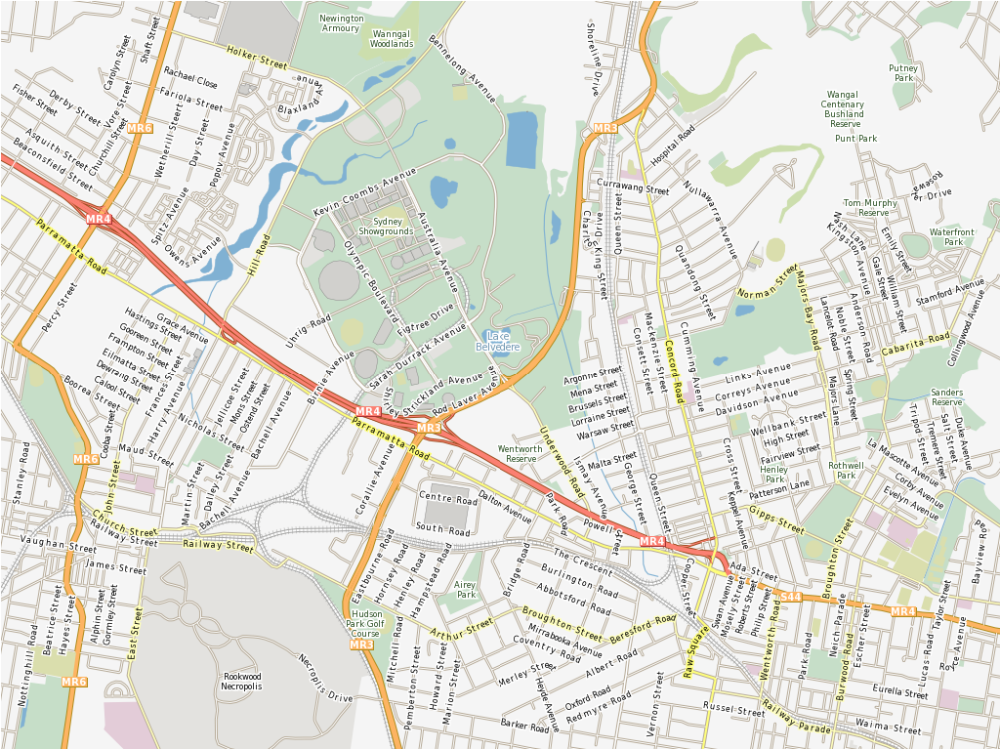

MapServer¶
Service Web¶
MapServer is an Open Source geographic data rendering engine written in C. Beyond browsing GIS data, MapServer allows you create « geographic image maps », that is, maps that can direct users to web content. For example, the Minnesota DNR Recreation Compass provides users with more than 10,000 web pages, reports and maps via a single application. The same application serves as a « map engine » for other portions of the site, providing spatial context where needed.
MapServer a été originellement développé par le projet ForNet de l’Université du Minnesota (UMN) en coopération avec la NASA et le département du Minnesota des Ressources Naturels (MNDNR). Plus tard il a été hébergé par le projet TerraSIP, un projet sponsorisé par la NASA entre l’UMN et un consortium d’organismes de gestion des sols.
MapServer is now a project of OSGeo, and is maintained by a growing number of developers (nearing 20) from around the world. It is supported by a diverse group of organizations that fund enhancements and maintenance, and administered within OSGeo by the MapServer Project Steering Committee made up of developers and other contributors.
{kind=link}
Caractéristiques principales¶
- Sorties cartographiques avancées
- Dessin d’objet géographique et exécution de l’application en fonction de l’échelle
- Étiquetage des géométries incluant la médiation des collisions des étiquettes
- Support des polices TrueType pour l’étiquetage et la symbolisation
- Automatisation d’éléments de cartes (barre d’échelle, carte de référence et légende)
- Cartographie thématique en utilisant des classes basées sur des expressions logiques ou des expressions régulières
- Support de moteur de rendu différents avec des pilotes pour AGG, Cairo et d’autres
- Gestion spéciale pour générer des sorties tuilées
- Couches masque
- Placement de symbole précis
- Symbologie de symboles/étiquettes multiples complexe
- Champs vecteur
- Décalage de label via une flèche
- Symbologie SVG
- Support de polices multiples
- Carte de chaleurs dynamiques
- Support UTF Grid
- Composition de couches
- Support de requêtes spatiales sophistiquées
- Identifier les objets par attributs, point, rectangle englobant ou géométrie sur une ou plusieurs couches
- Support pour l’interrogation sur des raster
- Sortie customisable complétement en s’appuyant sur un sytème de modèle
- Génération de sortie basée sur des appels à OGR
- Support d’environnement de développement et de scriptage populaires
- CGI/FastCGI
- PHP, Python, Perl, Ruby, Java, et .NET
- Support multi-platesformes
- Linux, Windows, Mac OS X, Solaris, et plus
- Une multitude de formats de données raster et vecteur
- Support natif pour les shapefiles ESRI, PostGIS et Oracle Spatial
- De nombreux autres formats via GDAL et OGR
- Support de projection de carte
- Reprojection de cartes à la volée avec plusieurs milliers de projections grâce à la bibliothèque Proj.4
Standards implémentés¶
- Support de nombreux standards de l’Open Geospatial Consortium (OGC)
- Web Map Service (WMS) (client/server)
- Web Feature Service (WFS) (non-transactional, client/server)
- Web Map Context (WMC)
- Web Coverage Service (WCS)
- Filter Encoding (FE)
- Styled Layer Descriptor (SLD)
- Geography Markup Language (GML)
- Sensor Observation Service (SOS)
- OM
- Conforme au « View Service INSPIRE »
Documentation¶
Détails¶
Website: https://mapserver.org
Licence: MIT-style license
Version du logiciel: 7.4.1
Plates-formes supportées: Windows, Linux, Mac
Interfaces de l’API: C, PHP, Python, Perl, Ruby, Java, and .NET
Support: https://mapserver.org/community/